Primary Sources
Every record consulted in this research. Click any image to view full size. Records are organised by individual, then by date. External links go to permanent FamilySearch or archive identifiers where available.
David Goldsmith

1882 Kamianets Birth Register
DAKhmO 277/1/20 · Entry 215
David Berliner/Goldschmidt — "from Austria"
David Berliner/Goldschmidt — "from Austria"
{kind=link}
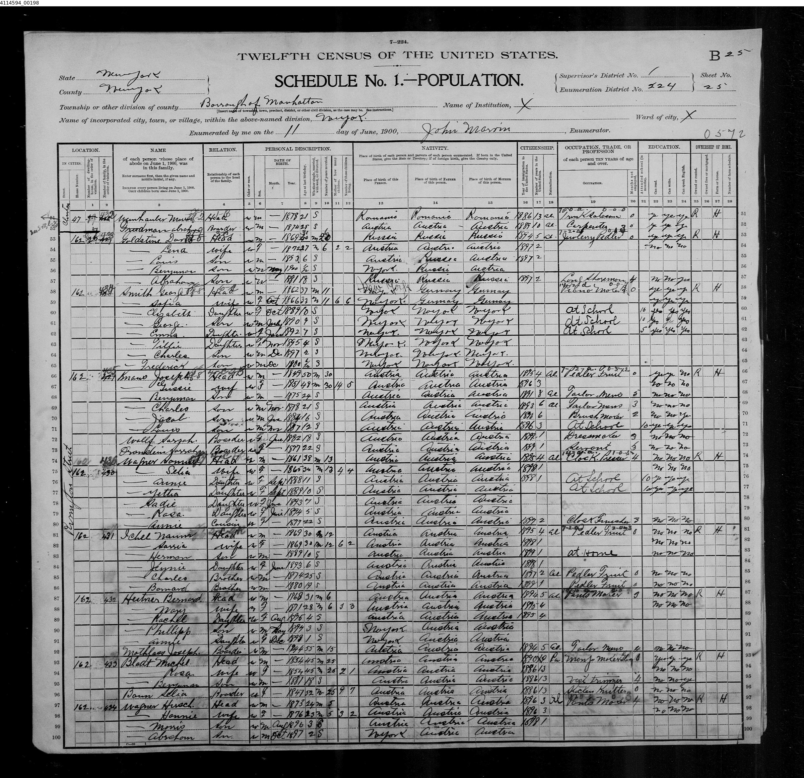
1900 U.S. Census
162 Rivington St, Manhattan
Surname "Goldstine" — immigration year 1894
Surname "Goldstine" — immigration year 1894
{kind=link}
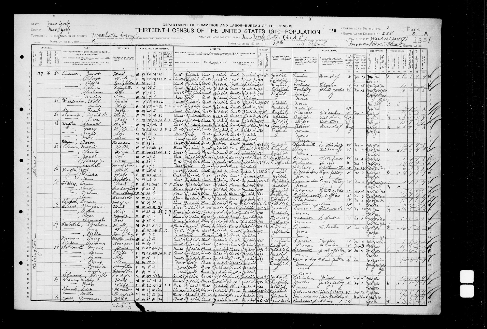
1910 U.S. Census
127 Rivington St, Manhattan
Immigration year 1895 · alien
Immigration year 1895 · alien

1882 Birth Register — Hebrew side
DAKhmO 277/1/20 · Entry 215
Father: David son of Shlomo Berliner
Father: David son of Shlomo Berliner
{kind=link}
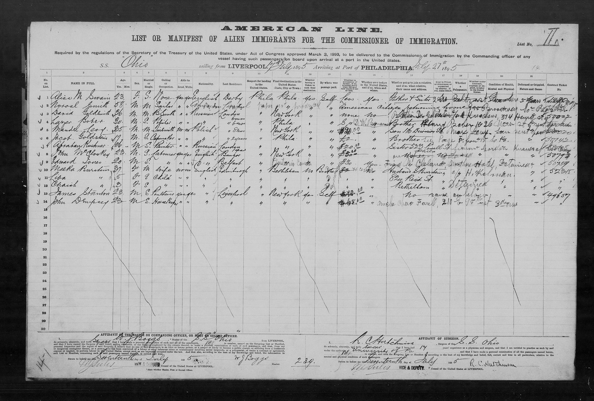
SS Ohio — Philadelphia 1895
NARA T840 · ARK: 1:1:23QD-3PY
Strong candidate for David's arrival
Strong candidate for David's arrival
{kind=link}
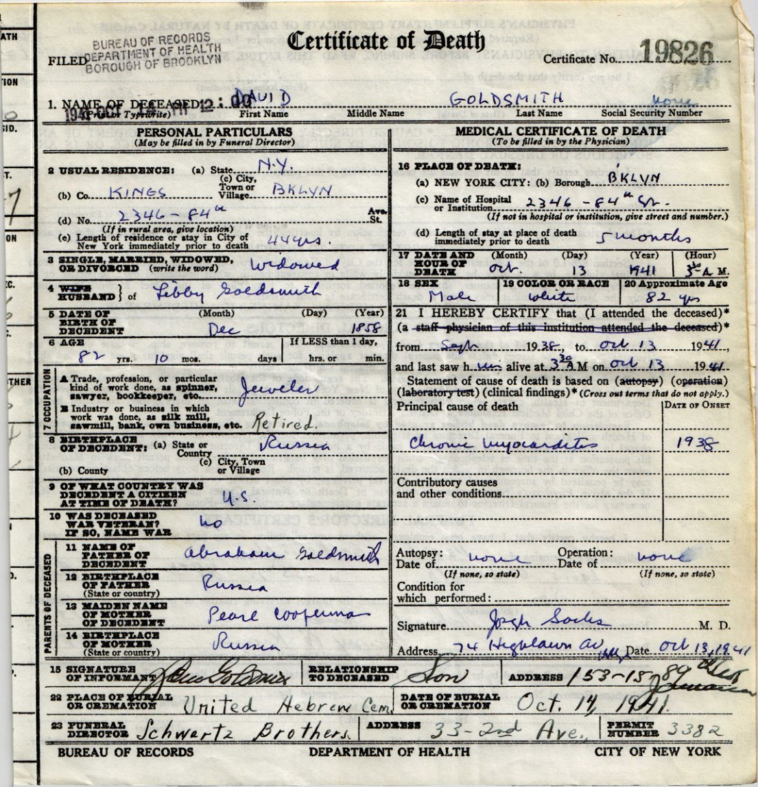
Death Certificate 1941
NYC, October 13, 1941
Chronic myocarditis · age 82
Chronic myocarditis · age 82
Bluma Levinson (née Goldsmith)
{kind=link}
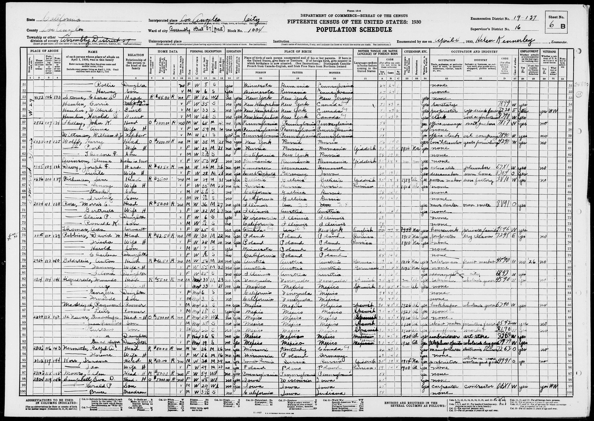
1930 U.S. Census — Bluma
Los Angeles · born Romania
ARK: XCV7-87Y
ARK: XCV7-87Y
{kind=link}
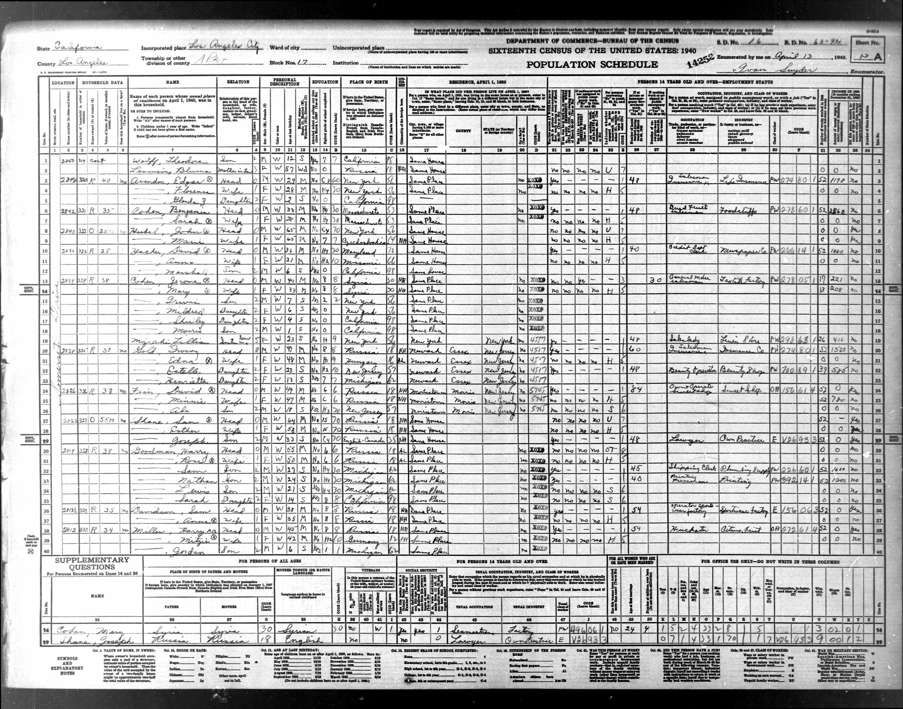
1940 U.S. Census — Bluma
Los Angeles · born Russia
ARK: K9C1-CHZ
ARK: K9C1-CHZ
{kind=link}
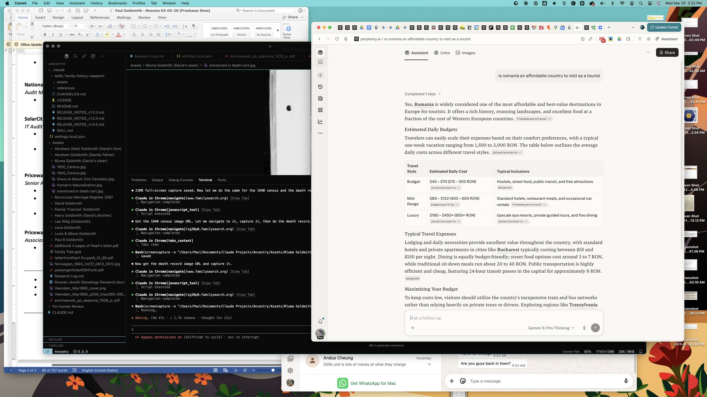
Death Certificate — Bluma 1949
Los Angeles · June 28, 1949
ARK: QGJX-NMRX
ARK: QGJX-NMRX
{kind=link}
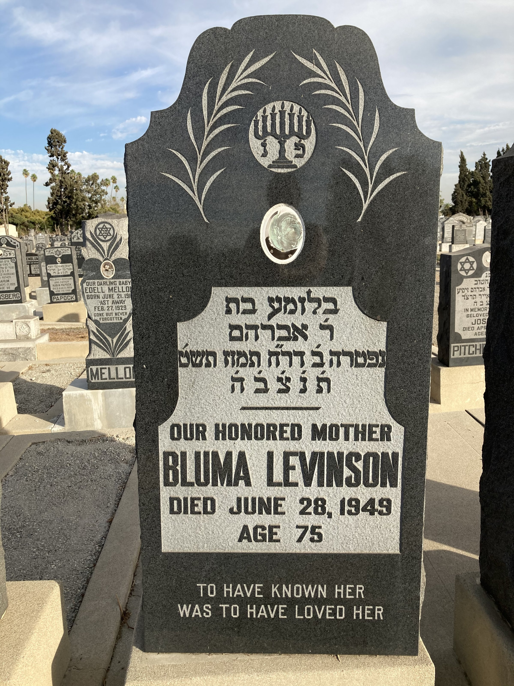
Gravestone — Mount Zion Cemetery
Hebrew: daughter of Abraham
2 Tammuz 5709 = June 28, 1949
2 Tammuz 5709 = June 28, 1949
{kind=link}
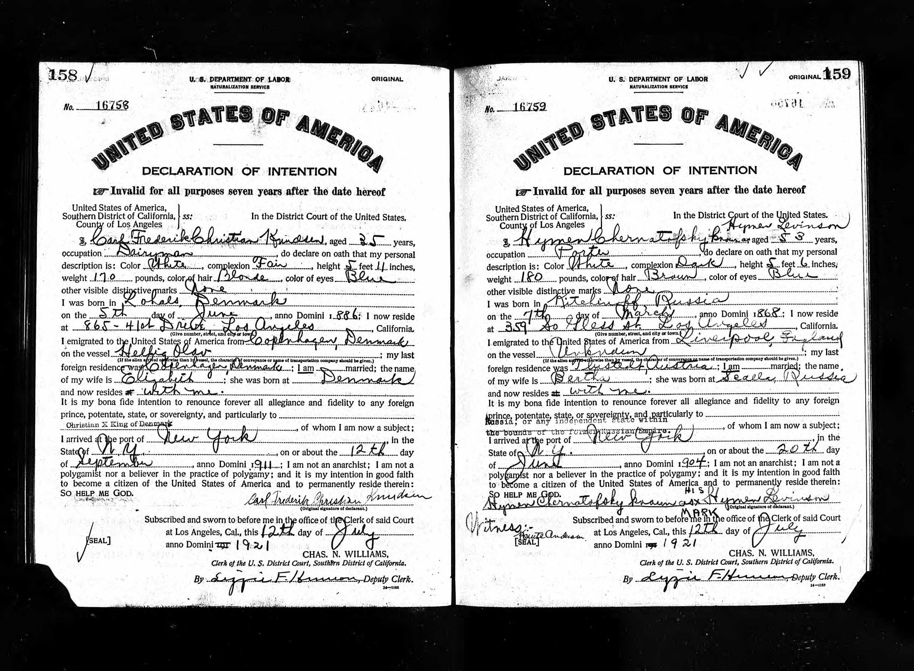
Hyman Levinson — Declaration of Intention
Los Angeles, 1921
Arrived NY ~1908
Arrived NY ~1908
{kind=link}
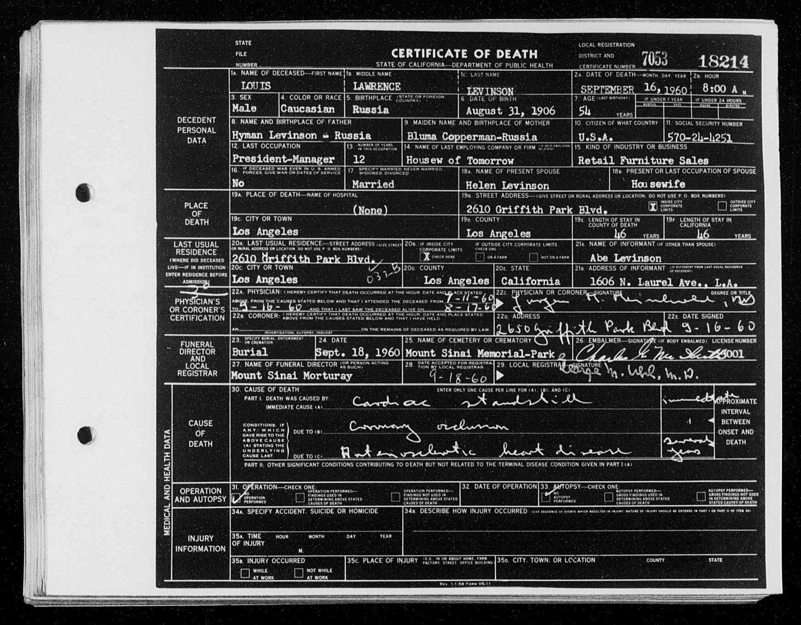
Louis L. Levinson Death Cert.
1960 · Mother: "Bluma Cooperman"
Third Kipperman corroboration
Third Kipperman corroboration
European Archives
{kind=link}
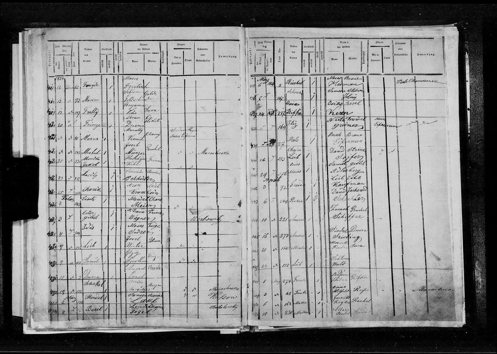
Kosów Birth Register 1854
TsDIAL 701/1/93 · Entry 418
Schlome Goldschmit + Golde
Schlome Goldschmit + Golde